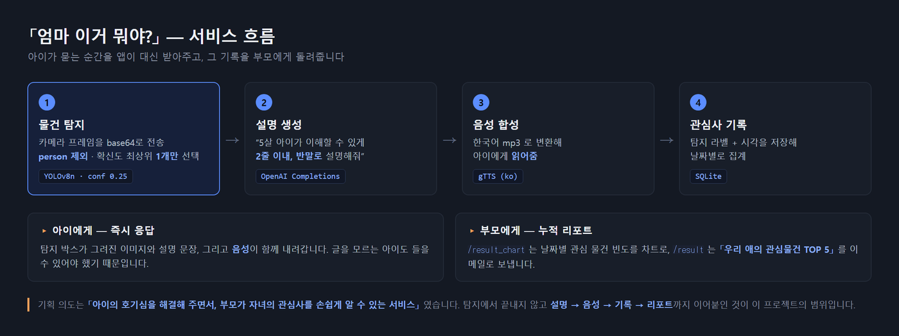
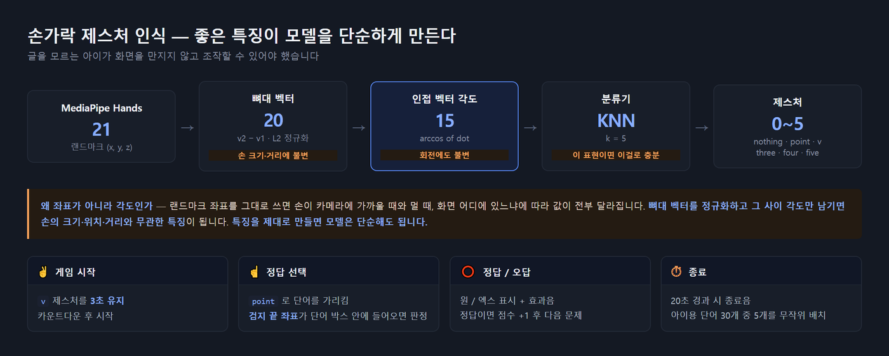

아이가 카메라로 물건을 비추면 AI가 5살 아이가 이해할 수 있는 말로 설명하고 음성으로 읽어줍니다. 관심사를 기록해 부모에게 리포트로 보내고, 손가락 제스처로 조작하는 단어 게임을 함께 제공합니다.
아이가 "엄마 이게 뭐야?"라고 묻는 상황을 앱이 대신 받아주는 것이 출발점입니다.

기획 의도는 "아이의 호기심을 해결해 주면서, 부모가 자녀의 관심사를 손쉽게 알 수 있는 서비스" 였고, 세 가지 기능으로 나눴습니다.
| 기능 | 내용 |
|---|---|
| ① 뭐든 물어봐 | 물건을 비추면 탐지 → GPT 설명 생성 → gTTS 음성으로 읽어줌 |
| ② 아이의 관심사 알림 | 탐지 기록을 쌓아 날짜별 차트 + 부모 이메일 리포트 |
| ③ 단어 학습 | 손가락 제스처로 조작하는 단어 맞추기 게임 |
AI 개발자 5명 팀에서 데이터 수집 · 이미지 라벨링 · YOLOv8 커스텀 학습 · 손가락 제스처 인식 · 음성 출력 · Flask 백엔드를 담당했습니다. 발주처는 한국전파진흥협회입니다.
@bp.route('/detect', methods=['POST'])
def detect():
image = cv2.imdecode(np.frombuffer(base64.b64decode(data['image']), np.uint8), cv2.IMREAD_COLOR)
results = model.predict(source=image, save=True, conf=0.25)
# person 을 제외하고 확신도가 가장 높은 객체 1개만 고른다
# → 아이에게는 "여러 개"가 아니라 "지금 보고 있는 그것" 하나를 말해줘야 한다
...
explanation = f"이것은 '{label}'야. " + get_gpt_response(label)
save_to_db(label, now)
return jsonify({"explanation": explanation, "image": image_base64,
"audio_path": generate_audio_from_text(explanation)})
탐지 기록은 SQLite에 (label, time_information) 으로 쌓이고,
/chart_data/<date> 가 날짜별 빈도를 집계해 차트로 보여줍니다.
/result 는 누적 상위 5개를 뽑아 부모 이메일로 발송합니다.
집 안 물건 중심으로 94개 클래스, 5,576장을 직접 수집하고 라벨링했습니다. 의자·마우스·이어폰 같은 일반 사물부터 프라이팬·가스레인지·고무장갑·샤워타올처럼 공개 데이터셋에 잘 없는 생활용품까지 포함했고, 아이 대상 서비스라 동물 인형 클래스도 따로 넣었습니다.
94개 중 4개는 인물 클래스이고, 나머지 90개가 사물입니다.
체크포인트에 남아 있는 실제 학습 인자입니다.
| 항목 | 값 |
|---|---|
| Base | yolov8n.pt (nano) — 실시간 추론이 목표라 가장 가벼운 모델 |
imgsz / batch | 640 / 64 |
epochs / patience | 1000 / 50 — 사실상 조기 종료에 맡긴 설정 |
optimizer / lr0 | auto / 0.01 |
사전학습된 YOLOv8이 이미 아는 객체 외에 서비스에 필요한 물건을 커스텀 클래스로 추가해야 했습니다. 학습 결과를 확인하다가 커스텀 클래스의 탐지율이 유독 낮다는 것을 발견했습니다. 원인을 따라가 보니 학습 데이터의 구성 자체가 기울어져 있었습니다.
| # | 조치 | 내용 |
|---|---|---|
| 1 | 데이터 증강 | Rotation · Cutout 등으로 소수 클래스를 약 3배 확보 |
| 2 | 클래스별 샘플 수 조정 | 데이터셋 구성 단계에서 클래스 간 비율 격차를 줄임 |
| 3 | 오라벨 수정 | 학습 데이터를 다시 훑어 잘못 라벨링된 것을 찾아 고침 |
3번이 의외로 효과가 컸습니다. 5,576장을 사람이 나눠 라벨링하다 보니 기준이 흔들린 구간이 있었고, 모델이 못 맞히는 클래스를 따라가 보면 데이터 쪽에 원인이 있는 경우가 많았습니다.
글을 모르는 아이가 화면을 만지지 않고 조작할 수 있어야 했습니다. MediaPipe의 손 랜드마크를 그대로 쓰지 않고, 각도 특징을 뽑아 KNN으로 분류했습니다.

| 동작 | 제스처 | 처리 |
|---|---|---|
| 게임 시작 | ✌️ v 를 3초 유지 | 카운트다운 후 시작 |
| 정답 선택 | ☝️ point 로 단어를 가리킴 | 검지 끝 좌표가 단어 박스 안에 들어오면 판정 |
| 정답 / 오답 | ⭕ / ❌ 표시 + 효과음 + 점수 반영 | |
| 종료 | 20초 경과 | 종료음 + 점수 초기화 |
화면에는 아이용 단어 30개 중 5개를 무작위로 배치하고, 정답 단어의 그림을 우측 상단에 보여줍니다. 한글은 OpenCV가 그리지 못해 PIL로 렌더링한 뒤 배열로 되돌리는 방식으로 처리했고, 캐릭터 오버레이는 알파 채널을 직접 블렌딩했습니다.
| 한계 | 내용 |
|---|---|
| 성능 지표 부재 | 개선을 수치로 증명할 수 없습니다. 저장소에 runs/ 로그도 남아 있지 않습니다 |
| 탐지 결과 이미지 경로가 절대경로 | predict(save=True) 가 만든 폴더를 파일시스템에서 직접 찾아 읽습니다.
예측 결과를 메모리에서 바로 인코딩하는 편이 맞습니다 |
| 게임 상태가 지역 변수 | 동시 접속 시 세션 분리가 되지 않습니다 |
| 웹캠을 서버가 직접 연다 | cv2.VideoCapture(0) 이 서버 측 카메라를 잡으므로 로컬 실행 전용입니다 |
text-davinci-003 단종 | 현재는 사용할 수 없어 최신 모델로 교체가 필요합니다 |